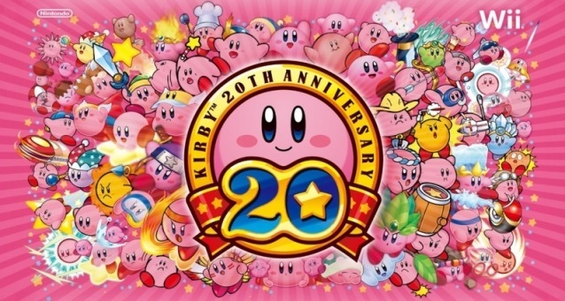
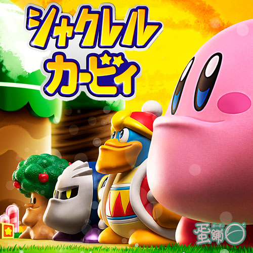

星之卡比
星之卡比(又譯作「卡比」、「卡比之星」)是HAL研究所和任天堂公司合力創造，
以同名角色星之卡比為主角的電子遊戲系列，早期卡比名為Popopo。
卡比給人的第一印象是可愛，即使在遊戲裡經常要打倒敵人。而且，隨著卡比的變身能力越來越重要，也令卡比所在的世界越來越變幻化。
卡比的另一特色是它的複製能力（即變身能力），因為卡比要吸進敵人才能得到變身能力，這令人覺得有一種神秘感，看到一個新的敵人都想試試看吸了會怎麼樣。


之前還出了卡比的厚道扭蛋系列
早期的作品夢之泉
資料來源
回上頁看自我介紹